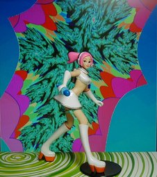
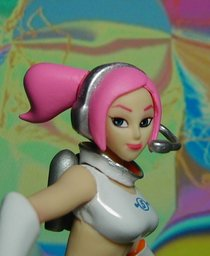

YUJIN SR セガギャルズコレクション うらら シークレット Ver.


ユージンSR セガギャルズコレクションの『スペースチャンネル５』のうららのシークレットカラーです。《スペースチャンネル５ パート２》の色になります。シークレットということで逆に売れ残っていたのか、これのみ入手できました。色的にはオレンジよりこちらのほうが好きですね。高さは 10cm ぐらいです。 私はパート１しか持っていないのですが、ノリがバカゲーなところがステキです。ゲームシステムとしては普通なのが残念でしたが、「操作方法」の説明画面のインパクトからすると、あえて複雑にしなかったのかもしれません。 今は 3D でアニメ調を作ると言えばトゥーンレンダリングを思い浮かべるでしょう。でも、この『スペースチャンネル５』のポリゴンぽさを活かしてアニメ調にする造形は、今のテクスチャベタ張りのキャラより魅力的だと私は感じます。私がラブ and ベリーに興味を持っているのは、そういった造形の発展形があるように読み取っているからです。 背景は Winamp の MilkDrop プラグインを WinShot したもので、GIMP で色調を変化させています。 更新：2006-03-30 初公開：2006年03月30日 02:07:43 最新版：2006年03月30日 02:07:43
Links: ユージン: http://www.yujin-figure.com/ (hbm) セガギャルズコレクション: http://my.tomy.co.jp/yujinp/meisai.asp?n=4904790930065 (hbm) スペースチャンネル５ パート２: http://www.sonicteam.com/games/sp5_2.html (hbm) ラブ and ベリーに興味を持っている: http://jrf.cocolog-nifty.com/column/2006/02/post_24.html MilkDrop: http://www.milkdrop.co.uk/ (hbm) WinShot: http://www.woodybells.com/winshot.html (hbm) GIMP: http://www.gimp.org/ (hbm)